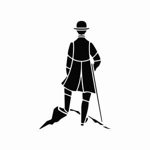
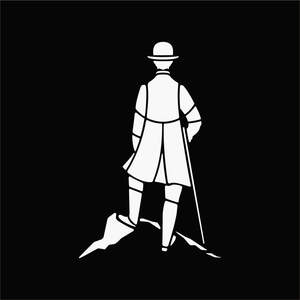

Trade Mark Journal No.2025/031 1 August 2025
UK00004237518 22 July 2025 (3,4,18,25)
Mark 1

Mark 2

- Class 3
- Cosmetics; Skincare cosmetics; Moisturisers [cosmetics]; Cosmetics and cosmetic preparations; Hair cosmetics; Skin fresheners [cosmetics]; Cosmetics for eye-lashes; Cosmetics for suntanning; Anti-aging moisturizers used as cosmetics; Organic cosmetics; Lip cosmetics; Non-medicated cosmetics; Nail cosmetics; Skin moisturizers used as cosmetics; Natural cosmetics; Mousses [cosmetics]; Cosmetics preparations; Make-up palettes containing cosmetics; Tanning oils [cosmetics]; Tanning gels [cosmetics]; Cosmetics in the form of lotions; Colour cosmetics; Facial creams [cosmetics]; Beauty care cosmetics; Self-tanning preparations [cosmetics]; Suncare lotions [for cosmetic use]; Cosmetics for animals; Eyebrow cosmetics; Tanning preparations [cosmetics]; Decorative cosmetics; Multifunctional cosmetics; Milks [cosmetics]; Eye cosmetics; Body creams [cosmetics]; After-sun oils [cosmetics]; Skin masks [cosmetics]; Cosmetics for eye-brows; Tanning milks [cosmetics]; Functional cosmetics; Facial gels [cosmetics]; Suntan oils [cosmetics]; Skin care cosmetics; Fluid creams [cosmetics]; Suntan lotion [cosmetics]; Cosmetics for children; Non-medicated cosmetics and toiletry preparations; Humectant preparations [cosmetics]; Emollient preparations [cosmetics]; Cosmetics in the form of creams; Powder compacts [cosmetics]; Sun-tanning preparations [cosmetics]; Cosmetic hair lotions; Colour cosmetics for the skin; Suntanning oil [cosmetics]; After-sun milks [cosmetics]; After-sun milk [cosmetics]; Cosmetics for use on the skin; Cosmetic moisturisers; Sunscreens [for cosmetic use]; Cosmetic creams and lotions; Bath powder [cosmetics]; Skin recovery creams [cosmetics]; Night creams [cosmetics]; Cosmetic products in the form of aerosols for skincare; Body gels [cosmetics]; Cosmetics for the use on the hair; Sun blocking lipsticks [cosmetics]; Body and facial creams [cosmetics]; Body care cosmetics; Lip stains [cosmetics]; Sunscreen [for cosmetic use]; Sunscreen creams [for cosmetic use]; Creams (Cosmetic -); Cosmetic creams; Cosmetic soaps; Cosmetics containing keratin; Hair care lotions [for cosmetic use]; Cosmetic skin fresheners; Cosmetics in the form of powders; Dyes (Cosmetic -); Cosmetic dyes; Cosmetics containing panthenol; After-sun lotions [for cosmetic use]; Cosmetics in the form of oils; Nail paint [cosmetics]; Facial lotions [cosmetic]; Cosmetic facial lotions; Beauty lotions; Cosmetic suntan lotions; Perfume oils for the manufacture of cosmetic preparations; Colour cosmetics for children; Skin care lotions [cosmetic]; Nail hardeners [cosmetics]; Anti-aging creams [for cosmetic use]; Tissues impregnated with cosmetics; Sun protecting creams [cosmetics]; Nail tips [cosmetics]; Cosmetic products for the shower; Nail primer [cosmetics]; Smoothing emulsions [cosmetics]; Anti-ageing creams [for cosmetic use]; Skin cleansers [cosmetic]; Perfumed powders [for cosmetic use]; Liners [cosmetics] for the eyes; Moisturising skin lotions [cosmetic]; Cosmetic creams for the skin; Skin creams [cosmetic]; Skin creams [for cosmetic use]; Body and facial gels [cosmetics].
- Class 4
- Candles; Candles and wicks for candles for lighting; Tealight candles; Votive candles; Scented candles; Wicks for candles; Candles for use as nightlights; Nightlights [candles]; Candles for lighting; Fragranced candles; Wicks for candles for lighting; Candles and wicks for lighting; Tallow candles; Candles in tins; Candle torches; Fruit candles; Floating candles; Aromatherapy fragrance candles; Beeswax for use in the manufacture of candles; Candles for night lights; Wax for making candles; Candle wax; Musk scented candles; Tealights; Grave candles, non-electric; Christmas tree decorations for illumination [candles]; Bougies in the nature of wax candles; Christmas tree candles; Christmas tree ornaments for illumination [candles]; Candles for absorbing smoke; Special occasion candles; Wicks for oil lamps; Wax lights; Lamp wicks; Wax for lighting.
- Class 18
- Briefcases [leather goods]; Leather; Key cases [leather goods]; Leather and imitations of leather; Leather and imitation leather; Leather for furniture; Leather handbags; Saddlery of leather; Leather bags; Imitation leather bags; Leather cloth; Leather for shoes; Leather wallets; Leather purses; Leather suitcases; Trimmings of leather for furniture; Furniture (Leather trimmings for -); Leather trimmings for furniture; Boxes of leather or leather board; Leather briefcases; Handbags made of leather; Imitation leather; Leather (Imitation -); Tanned leather; Laces (Leather -); Leather laces; Imitations of leather; Leather boxes; Boxes of leather; Straps of leather [saddlery]; Unworked leather; Furniture coverings of leather; Coverings (Furniture -) of leather; Bags made of imitation leather; Leather thongs; Vegan leather; Leather shopping bags; Leather pouches; Pouches of leather; Leather bags and wallets; Synthetic leather; Imitation leather sold in bulk; Labels of leather; Polyurethane leather; Bags made of leather; Handbags made of imitations leather; Leather straps; Straps (Leather -); Moleskin [imitation of leather]; Moleskin [imitation leather]; Leather luggage straps; Garment bags for travel made of leather; Leather sold in bulk; Travelling bags made of imitation leather; Briefcases made of leather; Sheets of imitation leather for use in manufacture; Pouches, of leather, for packaging; Leather luggage tags.
- Class 25
- Turtleneck shirts; Shirts; Dress shirts; Short-sleeve shirts; Short-sleeved shirts; Sweat shirts; Open-necked shirts; Long-sleeved shirts; Polo shirts; Shirt yokes; Yokes (Shirt -); Knit shirts; Pique shirts; Mock turtleneck shirts; Collared shirts; Sleep shirts; Corduroy shirts; Camouflage shirts; Rugby shirts; Short-sleeved T-shirts; Football shirts; Hooded sweat shirts; Shirts for suits; Maternity shirts; Button-front aloha shirts; Golf shirts; Night shirts; Soccer shirts; Shirts and slips; Ramie shirts; Woven shirts; Button down shirts; Dress pants; Aloha shirts; Shirt fronts; T-shirts; Yoga shirts; Casual shirts; Sleeveless jerseys; Tennis shirts; Sport shirts; Bibs, sleeved, not of paper; Fishing shirts; Under shirts; Sweat pants; Bib shorts; Denim pants; Jeans; Sports shirts; Sports shirts with short sleeves; Moisture-wicking sports shirts; Shorts [clothing]; Nappy pants [clothing]; Hunting shirts; Trousers shorts; Pants; Boy shorts [underwear]; Tee-shirts; Leggings [trousers]; Sweatpants; V-neck sweaters; Babies' pants [underwear]; Babies' pants [clothing]; Polo sweaters; American football shirts; Sweat shorts; Camouflage pants; Jerseys [clothing]; Turtleneck sweaters; Blue jeans; Denim jeans; Sleeveless jackets; Printed t-shirts; Trousers for sweating; Undershirts; Padded shirts for athletic use; Corduroy pants; Mock turtleneck sweaters; Stretch pants; Trousers; Maternity pants; Polo knit tops; Sleep pants; Denims [clothing]; Men's dress socks; Undershirts for kimonos (juban); Waterproof pants; Golf trousers; Dress shoes; Wristbands [clothing]; Pyjamas [from tricot only]; Pants (Am.); Bibs, not of paper; Baby pants; Chino pants; Snowboard trousers; Corduroy trousers; Pirate pants; Clothing for wear in wrestling games; Maternity shorts; Warm-up pants; Breeches for wear; Romper suits; Bib tights; Fleece shorts; Moisture-wicking sports pants; Golf clothing, other than gloves; Sleeved jackets; Underwear; Bib overalls for hunting; Clothes; Baby bibs [not of paper]; Trouser socks; Snap crotch shirts for infants and toddlers; Slacks; Short overcoat for kimono (haori); Rugby shorts; Skirt suits; Shorts; Maternity wear; Jackets (Stuff -) [clothing]; Stuff jackets [clothing]; Shoes for casual wear; Embroidered clothing.
Matthew Newstead